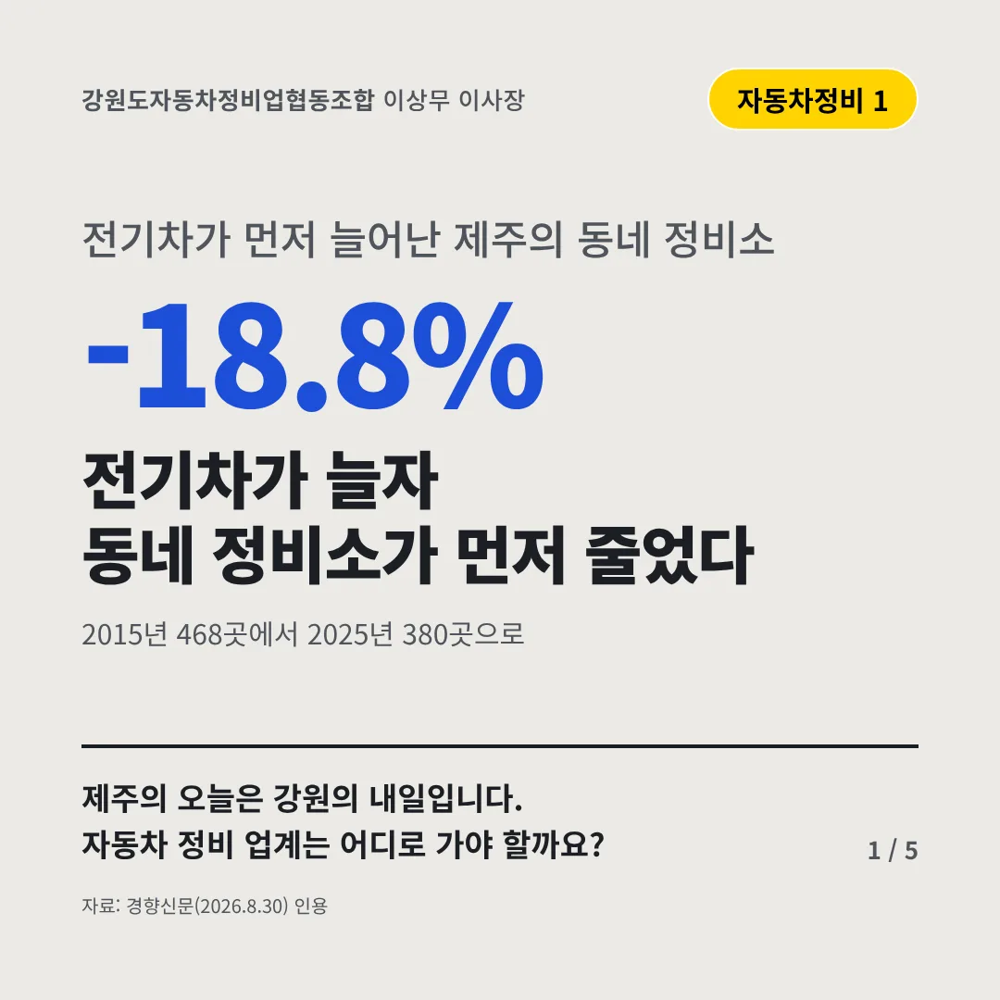
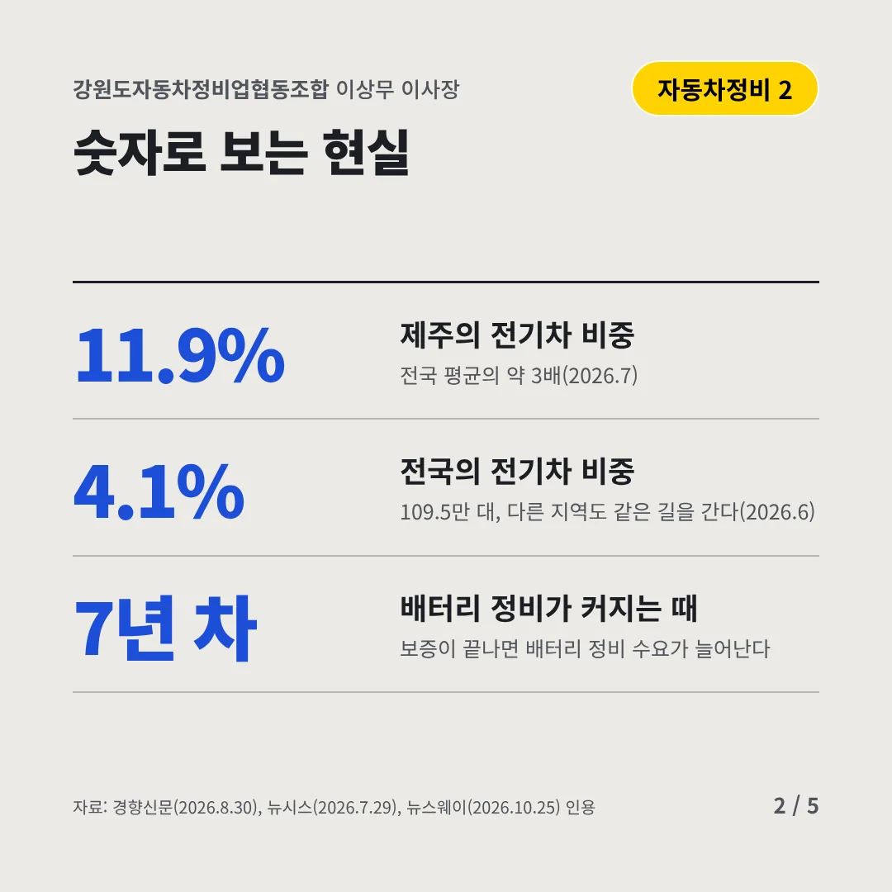
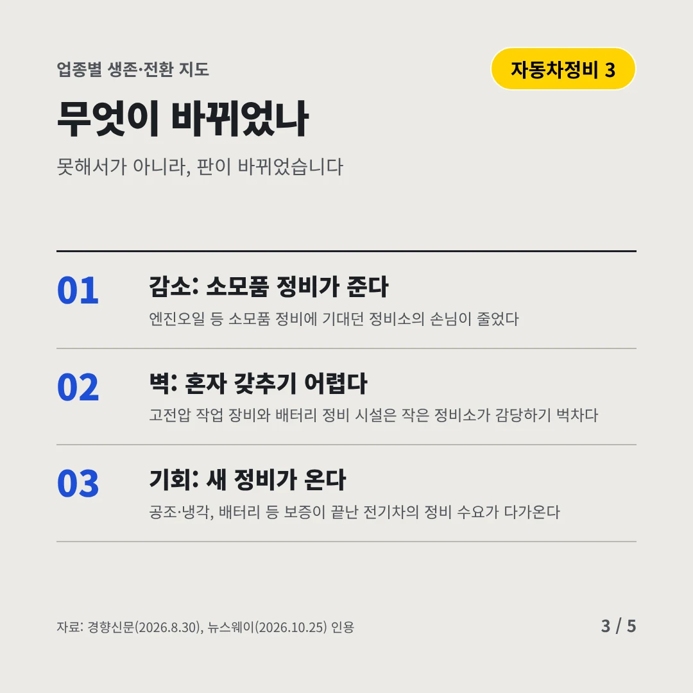
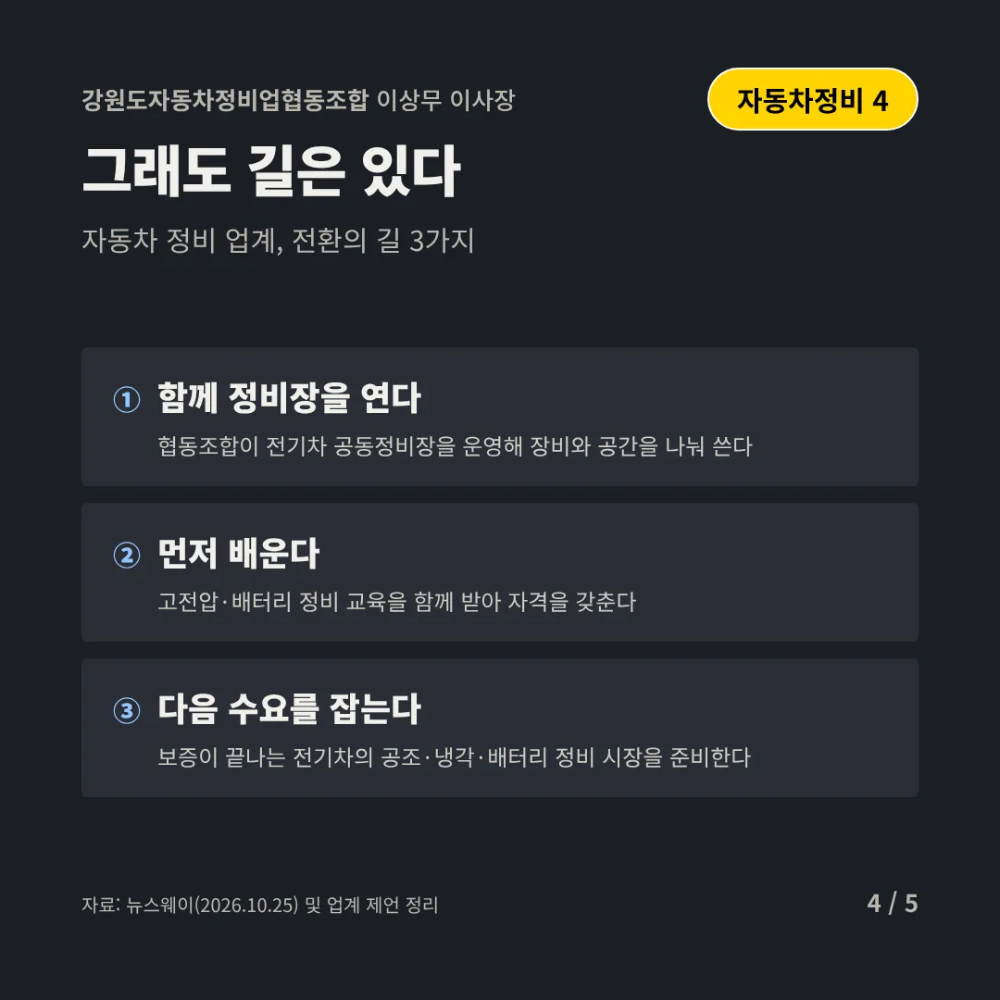
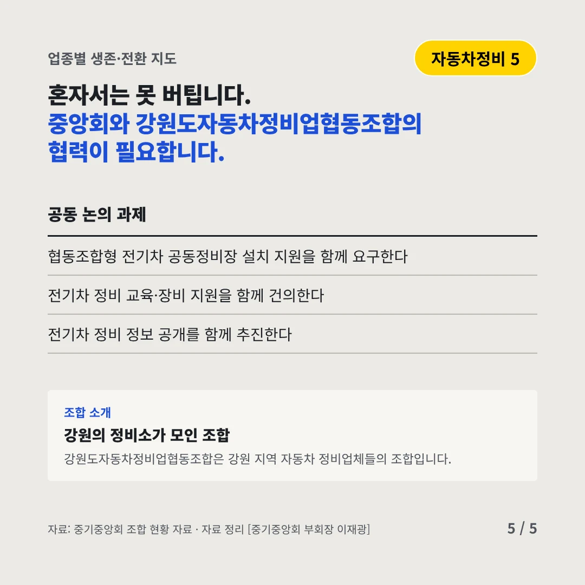
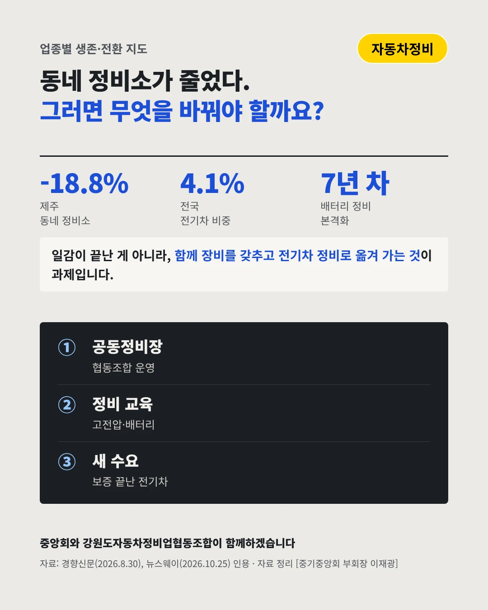

강원도자동차정비업협동조합이상무 이사장
전기차가 늘자 동네 정비소가 먼저 줄었다
-18.8% 전기차가 먼저 늘어난 제주의 동네 정비소






제주의 오늘은 강원의 내일입니다. 자동차 정비 업계는 어디로 가야 할까요?
숫자로 보는 현실
- 11.9%제주의 전기차 비중전국 평균의 약 3배(2026.7)
- 4.1%전국의 전기차 비중109.5만 대, 다른 지역도 같은 길을 간다(2026.6)
- 7년 차배터리 정비가 커지는 때보증이 끝나면 배터리 정비 수요가 늘어난다
무엇이 바뀌었나
- 감소: 소모품 정비가 준다엔진오일 등 소모품 정비에 기대던 정비소의 손님이 줄었다
- 벽: 혼자 갖추기 어렵다고전압 작업 장비와 배터리 정비 시설은 작은 정비소가 감당하기 벅차다
- 기회: 새 정비가 온다공조·냉각, 배터리 등 보증이 끝난 전기차의 정비 수요가 다가온다
그래도 길은 있다
- 함께 정비장을 연다협동조합이 전기차 공동정비장을 운영해 장비와 공간을 나눠 쓴다
- 먼저 배운다고전압·배터리 정비 교육을 함께 받아 자격을 갖춘다
- 다음 수요를 잡는다보증이 끝나는 전기차의 공조·냉각·배터리 정비 시장을 준비한다
한 장 요약

조합 소개
강원도자동차정비업협동조합은 강원 지역 자동차 정비업체들의 조합입니다.
자료: 경향신문(2026.8.30), 뉴시스(2026.7.29), 뉴스웨이(2026.10.25)